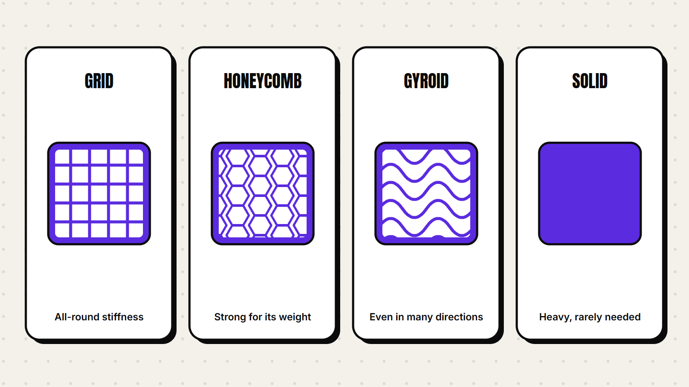
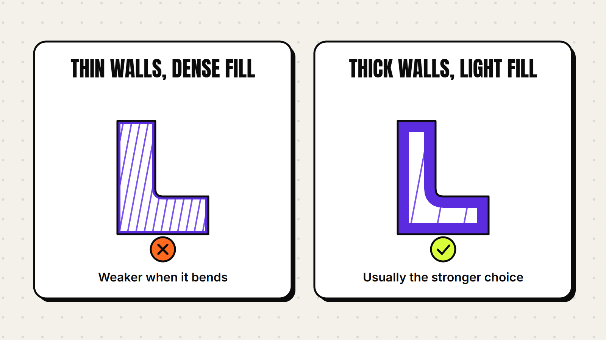

Cut a printed part in half and you may be surprised: it is often not solid. Inside the outer walls sits a repeating pattern of thin lines with air between them. This inner structure is called infill. Together with the walls, it decides how strong, heavy, and expensive a part is. Understanding the two helps you ask for a part that is strong where it needs to be, without paying for plastic that adds nothing.
A solid part uses much more material, takes longer, and can warp more as it cools. Many objects never need that strength. A decorative vase holds its own weight. A display shelf holds light models. Even working parts often gain more from thicker walls than from a solid middle.
Slicers describe density as a percentage. Zero is hollow and one hundred is solid. Light decor is often printed with low values, while parts that take force use more. The jump from 10 to 30 percent usually adds more strength than the jump from 60 to 80 percent, which mostly adds weight and time.

| Pattern | Character | Often used for |
|---|---|---|
| Lines | Quick and light | Decor and models |
| Grid | Good all-round stiffness | Everyday parts |
| Honeycomb | Strong for its weight, slower | Parts under load |
| Gyroid | Fairly even strength in many directions | Parts loaded from several sides |
| Concentric | Follows the outline | Flexible parts |
The differences are real but smaller than many expect. Walls and orientation usually matter more.
When a part bends, the greatest stress sits near its outer surface. Adding wall lines places material exactly there. Going from two walls to four often strengthens a hook or bracket more than doubling infill. Walls also help screws bite and stop sanding from breaking through.

A top surface needs several solid layers to span the gaps in the infill. Too few, and the top may sag or show holes. Increase them for flat lids, surfaces that carry weight, and parts that will be sanded.
Some slicers allow different settings in different regions: dense around screw holes, lighter elsewhere. Rounded inner corners, ribs, and gussets in the design can do even more. A thin plate with two ribs may be stiffer and lighter than a thick flat one.
No infill setting fixes a part that is loaded across its weakest direction. Layers pull apart more readily than they break along their length. Read how orientation affects strength before increasing density.
Treat these as general guidance, then test the real part with a safe load.
Numbers help more than adjectives. Say what will rest on the part, for how long, and from which direction the force comes. "A two-kilogram bag, hanging all day, pulling downwards" gives a printer something to design for. Mention knocks, vibration, and heat as well, because they change the choice of material and wall count.
Then test gently. Hang the load close to the floor, leave it for a few days, and look for bending or fine cracks near screws and corners. Printed plastic can creep slowly under constant weight, so a part that looks fine on the first afternoon deserves a second look the following week.
Tip: Say what the part must hold and for how long. That tells a printer how many walls and how much infill to use better than a percentage does.
Normally not. It is hidden by the walls and the solid top and bottom layers. Very thin top layers can let the pattern show through as slight dips.
No. Weight in the wrong place adds little. Material near the surface and good orientation usually do more than a dense middle.
Yes, and it makes sense for small parts under high stress or parts that will be machined. It adds material and production time, so say why you need it.
Unless you have a special need, let the printer choose. Tell them the load and direction, which matter far more than the pattern name.
Strength is not the only goal. A wall-mounted holder that is heavier than needed puts more load on its screws, and a dense large model takes more material and longer to make. Ask for the lightest design that does the job with a sensible margin, and spend extra material only at the points that carry force.
Add the load and use to your quote request. For design numbers on walls and gaps, see designing for print, and for surface choices see layer height.